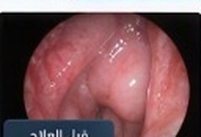
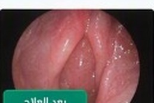
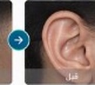
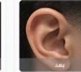

رعاية طبية وجراحية متكاملة في أمراض وجراحات الأنف والأذن والحنجرة والرأس والعنق للكبار والأطفال بأحدث التقنيات.
جراحات الجيوب الأنفية الوظيفية والمتقدمة بالمنظار الضوئي، وعلاج لحميات الأنف، التهابات الجيوب الأنفية المزمنة، حساسية الأنف، وتعديل اعوجاج الحاجز الأنفي وتصغير القرنيات.
تشخيص وعلاج ضعف السمع، التهابات الأذن الوسطى والداخلية، الدوار واضطرابات الاتزان، عمليات ترقيع طبلة الأذن الميكروسكوبي، والمشاركة الجراحية في عمليات زراعة القوقعة السمعية.
التشخيص المبكر والعلاج الجراحي لأورام وتورمات الرأس والعنق الحميدة والخبيثة، وجراحات الغدد اللعابية والغدة الدرقية والجار درقية.
رعاية متخصصة للأطفال تشمل استئصال اللوزتين واللحمية بأحدث تقنية (BiZact) العالمية لتقليل الألم والنزيف وسرعة التعافي، وسحب سوائل الأذن وتركيب أنابيب التهوية.
مناظير الحنجرة والأحبال الصوتية الدقيقة، علاج بحة الصوت، لحميات وعقيدات الأحبال الصوتية، ارتجاع الحنجرة والبلعوم، واضطرابات البلع.
تقييم وعلاج حالات الشخير وانقطاع التنفس الانسدادي أثناء النوم جراحياً وطبياً، بالإضافة إلى التعامل المتقدم مع إصابات وطوارئ الوجه والأنف والأذن والحنجرة (معتمد ATLS).
نتائج ملموسة قبل وبعد العلاج الجراحي والمناظير .. اضغط على الزر لاستعراض الحالات السريرية الموثقة.

قبل العلاج
بعد العلاجتحسن واضح في التنفس وجودة الحياة بعد عملية منظار الجيوب الأنفية الوظيفي (FESS).

قبل
بعداستعادة القدرة على السمع وتحسن التواصل الفعال مع المحيط.